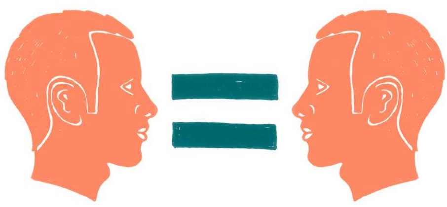

6.4 Jak to celé dělat spravedlivě
Klimatická krize je poháněna lidmi a různým způsobem dopadá na jejich životy, proto je společenský rozměr klimatické krize klíčový. Její řešení musí probíhat způsobem, který bude společnost považovat za únosný a spravedlivý a bude schopná jej přijmout. Jinak totiž hrozí, že se lidé proti klimatickým politikám a opatřením postaví.
Klimatická změna prohlubuje stávající nerovnosti. Navíc do budoucna existuje riziko, že se to bude dít stále více – například v otázce dostupnosti zdrojů (pitná voda, zdravé potraviny) či v možnostech vybrat si místo pro život ve zdravém životním prostředí, stejně jako v možnostech mít vlastní dostupné zdroje energie nebo investovat do jejich úspor.
Změny klimatu mají různé dopady na různé skupiny. A to nejen pokud rozlišujeme „bohaté země globálního Severu“ a „chudé země globálního Jihu“, ale i když se podíváme na situaci u nás, kde vysoké teploty více dopadají na zdraví starších lidí, sucha trápí převážně obyvatelstvo na venkově a lidé pracující v závislosti na krajině jsou více ohroženi ztrátou příjmů. Bohatí lidé si už dnes mohou dovolit lépe se změnám klimatu přizpůsobit.
Zajímavým fenoménem je migrace, ale ne ta utečenecká. Existují studie, které ukazují, že oblasti v rámci Evropy méně zasažené klimatickou změnou (například severní Evropa) se mohou stát oázou pro lidi z více zasažených částí Evropské unie (například ze Středomoří). To se ale samozřejmě týká pouze těch, kteří si podobné přemístění a investice budou moci dovolit. Související stoupání cen nemovitostí v cílových oblastech pak může představovat bariéru pro místní obyvatele. V některých státech se proti podobnému vývoji staví tím, že řeší, komu se nemovitosti smí prodávat.
Zuzana Harmáčková
Nemají-li se tyto dynamiky do budoucna dále prohlubovat, musí být klimatická politika také politikou „sociálně-ekologické soudržnosti“, která bude tyto nerovnosti překonávat a společnost spojovat. Široká společenská shoda a spolupráce je možná jen tehdy, pokud budou klimatické politiky lidem dávat smysl a pokud budou jejich náklady rovnoměrně rozložené. Nesmí tedy představovat neúnosnou hrozbu pro domácnosti v podobě nezvladatelného snižování jejich kvality života. Klimatické hnutí v této situaci musí sociální rozměr klimatických opatření zdůrazňovat a aktivně se stavět na stranu lidí a jejich legitimních potřeb a zájmů.
Tato kapitola se věnuje právě tématům, která se spravedlivým řešením klimatické krize souvisejí, a zaměřuje se na spravedlivou transformaci jako na širší proces změny. První část textu ukazuje některé problémy transformačního procesu a možné cesty k ekologicky udržitelnější i sociálně spravedlivější společnosti. Druhá část textu se potom věnuje aktuálnímu tématu energetické chudoby a práva na dostupnou energii.

Problémy transformačního procesu a klíče k jejich řešení
Otázka takzvané spravedlivé transformace se dnes často zužuje jen na aktuální problémy regionů zasažených těžbou a spalováním uhlí, a to konkrétně v souvislosti se stejnojmenným fondem Evropské unie, takzvaným Fondem spravedlivé transformace (dále FST). Sám proces proměny uhelných regionů má ale kořeny už v útlumu průmyslu a těžby uhlí v 90. letech minulého století a bude trvat dál i po ukončení činnosti FST. Navíc problém spravedlivé transformace se brzy bude týkat také jiných než uhelných ekonomických odvětví, kde je nezbytná proměna, ať už jde o další formy energetiky, automobilový průmysl, leteckou dopravu, nebo třeba průmyslové zemědělství.
Je proto na místě vrátit se k širšímu pojetí tohoto pojmu, který pochází původně z dialogu odborového a ekologického hnutí. Jeho smyslem je, že celý proces transformace směrem k ekologické ekonomice by měl být férový. Pojem znamená, že by proces proměny měl nejen minimalizovat své negativní dopady, aby jej společnost vůbec přijala, ale zároveň by měl maximalizovat dopady pozitivní. Pokud bude transformace dobře pojatá, měla by být cestou, jak řešit více problémů najednou a směřovat k ekonomice, která bude nejen respektovat ekologické meze, ale také naplňovat lidské potřeby.
Odklon od uhlí je velká příležitost pro robustnější imaginaci a spravedlivější transformaci. Pokud by se podařil zrealizovat a reprezentovat zájmy lidí, je to příležitost pro ukázání dobré praxe ve větším měřítku. Neměli bychom dopustit, aby velké společnosti dostaly kompenzace po německém vzoru. Tam EPH skoupila doly s primární motivací vydělat na případném neúspěchu a pomalé tranzici, ale v případě úspěchu zkusit vytáhnout z německé vlády velké odškodné. Musíme chtít, aby se tohle nezopakovalo v České republice a aby zdroje šly do rozvoje regionů.
Lukáš Lehotský
Spravedlivou transformaci můžeme rámovat jako proces pozitivní, emancipační společenské proměny. Odklon od uhlí a od fosilních paliv obecně (dekarbonizace) otevírá – kromě evidentních rizik – také příležitosti pro to, aby skrze rozšířenou participaci lidí na utváření budoucí ekonomiky vznikla spravedlivější společnost, která bude lépe naplňovat potřeby všech. V širším pojetí by tedy spravedlivá transformace ekonomiky měla směřovat k důstojné práci, dostupnému bydlení, kvalitnímu vzdělávání, dostupnému zdravotnictví, zajištění potřebné péče apod.
Účast na rozhodování jako základ
Prvořadým problémem procesu transformace – zejména v dnešních uhelných regionech – je jeho nepřipravenost a nepromyšlenost. Souvisí s tím naprosto nedostatečná účast místních lidí na procesu rozhodování o tom, jak má proměna regionů vypadat (například u rozdělování prostředků z FST).
Často se uvádí, že lidé nejsou ochotni se do procesu zapojit. To je ale dáno už tím, že ministerstva ani kraje žádné smysluplné způsoby, jak se do rozhodování zapojit, nepřinášejí a omezují se na zřídkavé informativní přednášky. Mezi obyvateli uhelných regionů panuje také skepse k participaci a k tomu, že by mohli ovlivnit směřování financí z fondů. Už v minulosti totiž byli několikrát svědky toho, jak velcí hráči rozkradli veřejné rozpočty pro svůj soukromý byznys.5 Lidé mají historicky oprávněnou obavu, že ani kdyby si dali práci s vyjadřováním svých potřeb, nebude na ně brán zřetel.
V postindustriálních severočeských regionech mají lidé zkušenost s transformací z 90. let, doby ekonomické krize, kdy tahle místa zažila ekonomicky i sociálně výrazný pokles. Ze strany centrálních autorit převládal silný diskurz osobní odpovědnosti a osobní zásluhovosti – vy tomu nerozumíte, vy se nesnažíte. Ta zkušenost zamítnutí, absence podpory a přehlížení je v české společnosti hodně silná, zvlášť mezi lidmi s nižšími příjmy a na méně kvalifikovaných pozicích.
Lucie Trlifajová
Nemá-li se prohlubovat odpor proti transformaci, je zapotřebí, aby klimatické hnutí usilovalo o zásadní rozšíření účasti veřejnosti na rozhodování. Základem pro takové participativní plánování přitom musí být důkladnější analýzy pravděpodobných dopadů restrukturalizace na průmysl, jeho jednotlivá odvětví a na životy lidí.
Lidé musejí být do procesů vtaženi pomocí dlouhodobé, dobře naplánované a smysluplné participace. Nelze přitom čekat, že úřady vytvoří prostor pro větší podíl veřejnosti na rozhodování samy od sebe. Klimatické hnutí musí vytvářet konkrétní pobídky a tlak na stát, obce i kraje, aby byly vůči potřebám a požadavkům zdola vnímavější. Je potřeba vytvářet jak prostor pro participaci na rozhodování, tak podpůrné mechanismy (například administrativní podporu v žádostech o peníze), které umožní čerpat finance i menším subjektům.
Spravedlnost v rozložení nákladů a v investicích
Také kvůli nedostatečné participaci pak vzniká začarovaný kruh, kdy rozhodování bez účasti dotčených lidí přinášejí neuspokojivé výsledky, jež dále prohlubují neochotu participovat. Výsledkem jsou nedomyšlené a nesouvislé plány, které neodpovídají místním potřebám a vedou k neúčelnému vynakládání prostředků.
Proces je netransparentní, vylučuje malé podniky a uplatňuje se v něm vliv velkých hráčů. Konkrétním příkladem mohou být projekty Green mine společnosti Se-ven Innovations, projekt Gigafactory společnosti ČEZ nebo projekt Sokolovská investiční a green development společnosti Sokolovská uhelná.6 V těchto případech půjdou peníze na transformaci velkým firmám, které doteď bohatly z těžby uhlí.
Aktuálně vše nasvědčuje tomu, že se distribuci evropských fondů nepodaří udělat spravedlivě. Peníze by měly být nasměrovány způsobem, který umenší negativní sociální jevy v regionech, vytvoří nová zelená pracovní místa a přispěje k rozkvětu regionů. Místo toho budou podpořeny projekty velkých aktérů nebo greenwashingové projekty, jež nepřinesou ani důslednou dekarbonizaci, ani kvalitnější život lidem v regionech. Přinesou hlavně zisky několika velkým hráčům.
Velké téma je transparentnost. Hrozí, že si peníze rozeberou velké projekty krajů a průmyslových podniků a že nepůjdou na to, co chtějí místní lidé, pracovníci, obce v blízkosti dolů atd. Vymýšlí se tu x průmyslových a inovačních center, u kterých je potenciál řešit klimatickou krizi nebo spravedlivou transformaci pochybný, a přitom neprobíhá téměř žádné zapojení místních nebo komunikace s veřejností. Operační program Spravedlivá transformace nicméně ještě plně nenastartoval, takže je vše otevřené.
Kristina Zindulková
Klíčovou otázkou je, kdo bude mít z transformace prospěch a kdo ponese náklady. Poměr sil je dán i celkovým ekonomickým kontextem a nerovností v rozdělení bohatství ve společnosti a ekonomice vůbec. Je zásadní, aby proměna neměla neúnosné dopady na domácnosti, a naopak aby náklady primárně nesli ti, kteří si to nejvíce mohou dovolit a kteří nejvíce přispívají k devastaci planety (velcí znečišťovatelé, bohatí a producenti emisí z luxusní spotřeby).
Důležitá bude také změna daňového zatížení. Dnes ekologická opatření pociťují hlavně střední a nižší vrstvy také proto, že daňová struktura zatěžuje široké lidové vrstvy, zatímco nejbohatší korporace a jednotlivci (mimo jiné včetně uhelných oligarchů) využívají daňových skrýší a placení daní se vyhýbají. Tlak klimatického hnutí na daňovou spravedlnost (vyšší zdanění majetku, finančních transakcí či luxusního zboží) tak může jednak přispět k férovějšímu rozložení dopadů transformace, a jednak rozšířit možnosti států financovat pro transformaci potřebné veřejné investice.
Dotační programy dnes často představují jen další zdroj renty pro velké firmy. A nikdo se neptá, z čeho se to bude platit a jaká je daňová struktura. Platí to opravdu ty velké firmy? Platí daně v Evropské unii, nebo jinde? Nebo je neplatí vůbec? Platí to velcí znečišťovatelé, nebo všichni ostatní? Nemůžete od lidí shrabovat drobné, zatímco jinde vám odcházejí v daňových únicích stovky miliard. To nutně vyvolá odpor.
anonymní ekonomka
Práce: lokální, zelená, důstojná a smysluplná
Výsledkem nedostatečné participace a nespravedlivého rozdělení peněz pak může být, že místo aby byla transformace pro regiony příležitostí a vzpruhou, bude mít negativní sociální dopady. A to hlavně na lokality, které byly s těžbou uhlí bezprostředně spjaty. Dnešní pracovní místa ve starých sektorech navázaných na fosilní průmysl (uhelné doly, elektrárny) jsou přitom ve svém okolí často poměrně kvalitní z hlediska pracovních podmínek, sociálních jistot či odborové organizovanosti.
Jako alternativa k nim naopak vznikají jen místa výrazně nekvalitní či prekérní, například práce ve skladech nebo v montovnách. Hrozí, že právě takové „špatné alternativy“ bude naprosto nesmyslně podporovat z transformačních fondů veřejný sektor. Důsledkem takových scénářů pak může být, že nerovnosti v jádru dnešních problémů zůstanou nedotčené, a naopak se prohloubí. To pak může vést k další nedůvěře v instituce či demokracii jako takovou a k prohloubení společenské polarizace.
Když se teď díváme na obrovský růst zaměstnanosti v Ústeckém kraji, tak řada pracovních míst vzniká kolem skladů nebo je závislá na aktuálních výkyvech v poptávce v průmyslu a často je spojená s dojížděním do práce na směny. Klimatické hnutí musí umět tohle nějakým způsobem říct – do vašeho regionu tečou peníze, které by mohly vytvářet pracovní místa, která jsou kvalitnější než ty, kde teď pracujete.
Lucie Trlifajová
Téma dostupné, důstojné a smysluplné práce může být pro spravedlivou transformaci velmi nosné. Velká část lidí sdílí zkušenost z nedostatečně ohodnocené práce nebo zkušenost s nedostatkem času na péči a aktivity s rodinou. Proto by se klimatické hnutí mělo více zabývat tím, jak vytvořit důstojná, lokální a adekvátně ohodnocená (i s ohledem na genderový aspekt) pracovní místa, která budou reflektovat místní situaci.
Spravedlivá transformace dále může pro klimatické hnutí sloužit také jako příležitost debatovat, požadovat či testovat nové přístupy k problému zajištění smysluplné práce. Těmi jsou například programy garantovaných pracovních míst (jobs guarantee) nebo dlouhodobější rekvalifikace, umožňující zaměstnancům rozhodnout se, jakým směrem se v životě chtějí ubírat, namísto co nejrychlejšího nalezení jakéhokoli zaměstnání.
Smysluplná práce přitom může vznikat právě v ekologicky příznivých odvětvích včetně samotné transformace energetiky a potřebné adaptace krajiny na budoucí dopady změn klimatu. Klimatické politiky tak mohou být i v této oblasti navrženy tak, aby řešily více problémů současně a podpořily vznik kvalitních zelených pracovních míst na základě regionálních potřeb a ve spolupráci s místními lidmi.
Kulturalizace klimatických témat a společenská fragmentace
Další hrozbou je, že negativní sociální důsledky klimatické politiky mohou ještě prohloubit kulturalizaci debaty o klimatu, tedy její nasedání na „zákopové linie“ dnešních takzvaných „kulturních válek“. Taková dynamika je již nyní patrná v tom, že část společnosti vnímá změny klimatu jako snobské a elitní téma, odtržené od „skutečných problémů obyčejných lidí“.
Tento pocit může umocňovat například komunikace klimatického hnutí o dopadech klimatické krize na země globálního Jihu, která je vzdálená každodenním problémům místních lidí. Ale podobný efekt mohou mít i některá opatření, u nichž se lidé cítí, jako by jim byla vnucována, přestože si je nemohou dovolit (např. elektromobily).
Zároveň pak tuto dynamiku, která má generační i sociálně-ekonomické rozměry, dále záměrně prohlubují dezinformační média či průmyslová lobby, pro něž je takové rámování výhodné. Hrozí, že pokud klimatické hnutí nebude těmto kulturním válkám úspěšně čelit, budou dále ohrožovat společenskou soudržnost a schopnost společnosti realizovat účinná klimatická opatření.
Třeba elektromobilita je sociálně disproporční. Lidé z města si elektroauta můžou dovolit spíš než lidé na venkově, kteří jsou na ježdění autem více odkázaní a na které tak zákaz aut na fosilní paliva dopadne více. Ve Francii takhle ze zdražování benzínu vznikly žluté vesty. Francouzi začali protestovat, že povýšený pravičák Macron, místo aby ubíral byznysu a mocným, přenáší náklady na obyčejné lidi.
Vojtěch Pelikán
Energetická chudoba a právo na energii
Specifickým klíčovým tématem pro spravedlivou transformaci je téma dostupnosti energií. Téma energetické chudoby (resp. nemožnosti pokrýt vysoké náklady na energie) se dostává v České republice do veřejného prostoru teprve s aktuální energetickou krizí. Realita je ale taková, že jde o problém, s nímž se nejchudší vrstvy české populace potýkaly již dlouhou dobu.
Dnes hrozí, že kvůli rostoucím cenám a nevhodně provedené energetické transformaci může energetická chudoba do budoucna zasáhnout širší část společnosti včetně středních vrstev. Energie je přitom podmínkou naplňování mnoha základních lidských potřeb, a patří tak mezi jedno z lidských práv. Další klíčovou otázkou pro klimatické hnutí se tedy může stát právě téma práva na uspokojení energetických potřeb a související opatření. Je nezbytné, aby energie budoucnosti byla nejen environmentálně udržitelná, ale i dostupná a spravedlivě spravovaná a distribuovaná.
Rostoucí ceny energií a společenská polarizace
Před nedávným dramatickým nárůstem cen energií se nějaká forma energetické chudoby (schopnost vytápět obydlí, dluhy za energie nebo vysoké procento příjmů vydaných na energie) týkala čtvrtiny českých domácností. Energetická chudoba se v Česku také soustředí u několika skupin, kde dosahuje významného podílu – jedná se o nízkopříjmové domácnosti, které často žijí v technicky nevyhovujících obydlích.9 Lze s jistotou předpokládat, že se tato situace výrazně zhoršila, zejména u domácností, které na podzim 2021 spadly do režimu dodavatele poslední instance, kde byly ceny za elektřinu a plyn čtyř- až pětinásobné.
Energetická chudoba přitom prohlubuje další sociální problémy, jako je například bezdomovectví. Dopady růstu cen energií budou nejvíce hmatatelné tam, kde se již dnes kumulují mnohačetné strukturální problémy (například v uhelných regionech), ale i ve velkých městech (Praha, Brno), v nichž jsou náklady na bydlení vysoké.
Vzniká tak naléhavá potřeba ochránit domácnosti před dopady růstu cen energií a energetickou chudobou rozmanitými sociálními politikami. Pokud situaci nezvládneme, hrozí, že se dále prohloubí také kulturní a politická polarizace společnosti. Lidé ohrožení růstem cen energií budou mít oprávněně pocit, že na situaci – a přeneseně na klimatickou politiku jako takovou – doplácejí obyčejní lidé místo velkých znečišťovatelů.
Aby klimatické hnutí zmírnilo toto riziko, mělo by umět jasně komunikovat, že je na straně lidí, a vyzdvihávat hlas ohrožené veřejnosti. Mělo by komunikovat nejen fakta, kdo za nárůst cen energií může a jak to souvisí s celkovou nerovností v ekonomice, ale především vysvětlovat, jaká jsou krátkodobá i dlouhodobá řešení, která by domácnostem pomohla. Klimatické hnutí by také mělo být schopné propojit se s dalšími aktéry, identifikovat zdroje financování na podporu proti dopadům růstu cen energií a společně řešit, jak je dostat správným způsobem k ohroženým skupinám lidí.
Překážky pro řešení energetické chudoby
Základním problémem řešení energetické chudoby je nejasná a nepřesná definice tématu, a to jak na úrovni Evropské unie, tak českého státu. Kritéria pro energetickou chudobu daná Evropskou unií jsou nevhodná už proto, že indikátory, kterými ji lze měřit, nelze stanovit pro Evropu jednotně. Musejí vycházet ze specifického kontextu dané země. V aktuální situaci se podle společných evropských indikátorů pro energetickou chudobu Česká republika považuje za zemi, která na tom je ve srovnání s ostatními zeměmi poměrně dobře, i když to neodpovídá realitě.
Dalším problémem je to, že nejsou dostatečně zmapované skupiny, které jsou energetickou chudobou ohrožené. Nemůžeme mluvit o „chudých“ jako o homogenní skupině; existuje širší škála. Na jedné její straně najdeme nízkopříjmové domácnosti, jež mají problém platit výdaje za energie, a nemohou tak vytopit svá obydlí na adekvátní teplotu. Ale potom existuje řada domácností, které jsou na hraně: nemohou si kvůli vysokým nákladům dovolit nadstandardní výdaj nebo investici, a hrozí jim tak riziko pádu do energetické chudoby. Takové domácnosti můžeme označit za „energeticky zranitelné“.
Sem patří také lidé, kteří nemohou své výdaje za energie ovlivnit, protože bydlí v ubytovnách či v nájmech, kde nemohou rozhodnout o výběru dodavatele nebo investovat do zateplení budovy apod. Pro různé skupiny ohrožených lidí jsou tak potřeba specifická a často rozdílná řešení s ohledem na jejich situaci.
Bylo by vhodné používat kombinaci indikátorů, včetně těch subjektivních – jestli jsou domácnosti schopné vytopit byt na adekvátní teplotu, jestli bojují s úniky tepla nebo plísněmi, zda mají nedovírající okna či dveře a zda ony samy vidí výdaje za energii jako velkou zátěž. Takto můžete zachytit ty, kteří svoje domácnosti dostatečně nevytápějí nebo s tím mají problém, anebo případně bojují s platbami za energie.
Hedvika Koďousková
Efektivnímu řešení brání také skutečnost, že nástroje k boji s energetickou chudobou drží v ruce několik ministerstev a úřadů, které spolu dlouhodobě spolupracují jen omezeně nebo vůbec. Mezi hlavní aktéry patří Ministerstvo průmyslu a obchodu, jež určuje koncepci energetické politiky a poskytuje některé dotace a poradenství. Další dotační programy provozuje Ministerstvo životního prostředí a důchody a sociální dávky pak patří pod Ministerstvo práce a sociálních věcí.
Role klimatického hnutí může být nejen v prosazování konkrétních řešení uvedených problémů, ale také v proměně diskuze o tom, kdo si zaslouží pomoci. Opatření směřující k řešení sociálních problémů a chudoby často blokuje představa, že každý je svého štěstí strůjcem. Do debat o energetické chudobě se pak tyto postoje zásluhovosti promítají. Podobné názory přitom mají jasný asociální rozměr a souvisejí s předsudky společnosti vůči Romům a chudým či nezaměstnaným lidem.
Na základě takto rámované debaty pak často dochází k tomu, že než aby se pomohlo lidem, kteří si to podle některých nezaslouží, nepomůže se raději nikomu a doplatí na to všichni. Klimatické hnutí by proto mělo pracovat s narativy, jež zdůrazňují, že uspokojení základních energetických potřeb je právo každého a předpoklad důstojného života, nikoli něco, co si člověk musí zasloužit.
Problém je, že existují velmi silné představy o tom, kteří chudí si pomoc zaslouží a kteří ne. Na jedné straně je představa třeba babičky, na kterou přijdou šmejdi a prodají jí drahé energie. A tu je potřeba chránit. Ale pak jsou tady „jiní“ a ti si to nezaslouží. Často to není vyřčené, ale je jasné, že se myslí specificky sociálně slabí a Romové. Osekaný sociální stát zvýraznil princip zásluhovosti a nasedl na existující rasové stereotypy. Podle mě jedinou odpovědí je hledat daleko univerzálnější formy podpory. Protože ten pocit části společnosti, že o ně se stát nestará, když potřebují, je teď oprávněný.
Lucie Trlifajová
Udržitelná energie musí být dostupná
Klimatické hnutí by se mělo snažit, aby energetická transformace byla spravedlivá a neprohloubila energetickou chudobu. Proto je potřeba zpřístupnit zelené technologie i lidem, kteří si je dnes nemohou dovolit kvůli problémům, jako jsou nízké mzdy, exekuce, stoupající životní náklady či zvyšující se nájmy. A to platí jak pro vlastníky nemovitostí, tak pro lidi žijící v nájmech, ačkoli se potřebná řešení v obou případech liší.
Zájem o instalaci fotovoltaiky na střechy domácností dnes roste a kvůli vysokým cenám energií se zvyšuje také jejich finanční výhodnost. Jenže i pro vlastníky nemovitostí je dnes často investice do zateplení nebo do ekologického způsobu vytápění nedosažitelná. Aktuální dotační programy jsou nastavené tak, že zájemci musejí mít poměrně velký vlastní kapitál a také schopnosti projít složitým a zdlouhavým dotačním procesem. Přitom pro pětinu společnosti je problematický nárazový výdaj nad dvanáct tisíc korun.10 U lidí v exekucích zase není ošetřeno, aby jim peníze potřebné pro investici nezabavil exekutor.
Klimatické hnutí může pracovat s konkrétními příklady dobré praxe, kdy se podařilo zajistit takovou podporu institucí, která byla dosažitelná i pro nízkopříjmové skupiny. Příkladem může být situace v Ostravě, kdy město vstoupilo mezi domácnosti a poskytovatele energie. Pokud měla domácnost problém splácet účty za energie nebo byla zadlužená, město se mohlo za danou domácnost zaručit a poskytnout jí splátkový kalendář. Město tak pomáhalo dané domácnosti vymanit se z problematické situace.11
Spolupráce různých aktérů se ukazuje jako klíčová. Lidé v nájmech jsou ohroženi zároveň růstem cen energií i růstem cen nájmů, ale do úsporných opatření v domě nemohou investovat, protože jej nevlastní. Důležité je proto spolupracovat i s vlastníky nemovitostí a pronajímateli a získávat i veřejnou podporu pro smysluplné a udržitelné alternativy.
Tipy pro klimatické hnutí
Komunikace
- Je podstatné zdůrazňovat sociální rozměr klimatických opatření a aktivně se stavět na stranu lidí a jejich legitimních potřeb a zájmů.
- Pojem spravedlivá transformace by se neměl omezovat pouze na problematiku přeměny uhelných regionů, ale je vhodné používat jej v širším smyslu jako označení pro proces férové přeměny ekonomiky a společnosti při řešení klimatické krize.
- Klimatické hnutí musí komunikovat s širokými vrst-vami lidí a brát vážně jejich potřeby a zkušenosti.
- Měla by se proměnit diskuze o tom, kdo si v rámci spravedlivé transformace či řešení energetické chudoby zaslouží podporu. Opatření často blokuje představa, že každý je svého štěstí strůjcem.
- Klimatické hnutí může pracovat s konkrétními příklady dobré praxe, kdy se institucím podařilo zpřístupnit dotace a další podporu těm nejohroženějším a udělaly ji skutečně nízkoprahovou.
- Je na místě komunikovat, jakým způsobem se některé firmy nebo bohatí jednotlivci individuálně připravují na změny klimatu, a přitom se odmítají podílet na celospolečenských řešeních.
Příležitosti
- Lidé musejí být do procesů vtaženi pomocí dlouhodobé, dobře naplánované a smysluplné participace. Klimatické hnutí musí vytvářet konkrétní pobídky a tlak na stát, obce i kraje, aby byly vůči potřebám a požadavkům zdola vnímavější.
- Tlak klimatického hnutí na daňovou spravedlnost (vyšší zdanění majetku, finančních transakcí či luxusního zboží) může jednak přispět k férovějšímu rozložení dopadů transformace, a jednak rozšířit možnosti států financovat pro transformaci potřebné veřejné investice.
- Spravedlivá transformace je příležitost otevřít téma důstojné, lokální a adekvátně i spravedlivě ohodnocené práce.
- V rámci spravedlivé transformace bude hrát velkou roli téma energetické chudoby a práva na uspokojení energetických potřeb. Je nezbytné pracovat na tom, aby energie budoucnosti byla nejen environmentálně udržitelná, ale i dostupná a spravedlivě spravovaná a distribuovaná.
Hrozby
- Klimatická změna prohlubuje stávající nerovnosti. Navíc do budoucna existuje riziko, že se to bude dít stále více – například v otázce dostupnosti zdrojů (pitná voda, zdravé potraviny), v možnosti vybrat si místo pro život ve zdravém životním prostředí či v možnostech mít vlastní dostupné zdroje energie nebo investovat do jejich úspor.
- Jestliže dojde k nespravedlivému rozdělení peněz z Fondu pro spravedlivou transformaci a dalších zdrojů, celý proces může mít negativní sociální dopady místo toho, aby byl pro regiony příležitostí a vzpruhou.
- Negativní sociální důsledky transformace mohou ještě prohloubit vnímání změn klimatu jako elitní problematiky odtržené od problémů obyčejných lidí. Pokud klimatické hnutí nebude těmto kulturním válkám úspěšně čelit, mohou vážně ohrozit realizaci potřebných klimatických politik. Velkou roli bude hrát také inflace a růst cen energií.
O čem byla tato kapitola
- Klimatická krize je poháněna lidmi a různým způsobem dopadá na jejich životy, a proto je společenský rozměr klimatické krize klíčový. Je nezbytné, aby řešení klimatické krize bylo sociálně spravedlivé, inkluzivní a aby podporovalo společenskou soudržnost. Pokud bude transformace dobře pojatá, měla by být cestou, jak řešit více problémů najednou a směřovat k ekonomice, která bude nejen respektovat ekologické meze, ale také naplňovat lidské potřeby.
- Mezi hlavní problémy procesu přeměny ekonomiky aktuálně patří jeho nepřipravenost a nepromyšlenost, nedostatečná účast místních lidí, jeho netransparentnost a zřejmý vliv velkých hráčů na rozdělování peněz. Je zásadní, aby transformace neměla neúnosné dopady na domácnosti a aby náklady primárně nesli ti, kteří si to mohou nejvíce dovolit a kteří nejvíce přispívají k devastaci planety.
- Spravedlivá transformace také může znamenat vznik nových smysluplných pracovních míst. Avšak jako alternativa k zaměstnání v uhelném průmyslu dnes často vznikají jen místa výrazně nekvalitní – například práce ve skladech nebo v montovnách. Důsledkem toho může být, že se společenské nerovnosti a skepse k ochraně klimatu prohloubí. Část společnosti navíc vnímá ochranu klimatu jako snobské a elitní téma odtržené od „skutečných problémů obyčejných lidí“. Tuto dynamiku pak dále záměrně prohlubují dezinformační média či průmyslová lobby, pro něž je takové rámování výhodné.
- Aktuálním problémem je také nepřesná definice energetické chudoby na úrovni EU i ČR a nedostatečné mapování skupin lidí, kteří jsou jí zatím jen ohroženi, tedy jsou energeticky zranitelní. Efektivnímu řešení problémů s energetickou chudobou brání nízká spolupráce ministerstev a úřadů, jež v problematice hrají roli, ale také představa, že přístup k energiím si člověk musí zasloužit. Je proto nutné budovat povědomí, že uspokojení základních energetických potřeb je předpokladem důstojného života. Dále je potřeba pracovat na zpřístupnění udržitelných technologií lidem, kteří si je dnes nemohou dovolit.
NOVÁ DOHODA: program sociálně-ekologické transformace pro Českou republiku [online]. Dostupné z: novadohoda.cz. ↩︎
Spravedlivá transformace očima místních lidí [online]. Dostupné z: re-set.cz.pdf. ↩︎
ZINDULKOVÁ, K. Spravedlivá transformace a korupční rizika [online]. Dostupné z: www.amo.cz.pdf. ↩︎
ZINDULKOVÁ, Kristina a Veronika DOMBROVSKÁ. Spravedlivá transformace a participace: Jak zapojit veřejnost do přeměny uhelných regionů [online]. Dostupné z: www.cde-org.cz.pdf. ↩︎
Příkladem může být kauza ROP Severozápad. Dostupné z: cs.wikipedia.org. ↩︎
BOČEK, Jan. 41 miliard na nový život uhelných regionů půjde hlavně k velkým hráčům. Dostupné z: www.irozhlas.cz. ↩︎
Viz práce českého Institutu pro cirkulární ekonomiku: Publikace. Dostupné z: incien.org. ↩︎
Jak posílit místní ekonomiku: zajímavé tipy pro starosty, zastupitele i občany. Dostupné z: www.veronica.cz. ↩︎
Zranitelný zákazník a energetická chudoba v ČR: Mapovací a plánovací studie [online]. Dostupné z: www.mpo.cz. ↩︎
ŽIVOTNÍ PODMÍNKY V ČR 2020: Finanční a sociální situace domácností | Zadlužení domácností. Dostupné z: www.czso.cz.pdf/41cda24d-0215-408c-bac2-d99f16be0436?version=1.0. ↩︎
Dobrá praxe v ČR a kazuistiky: Řešení dluhové problematiky související s bydlením. Dostupné z: www.socialnibydleni.mpsv.cz. ↩︎